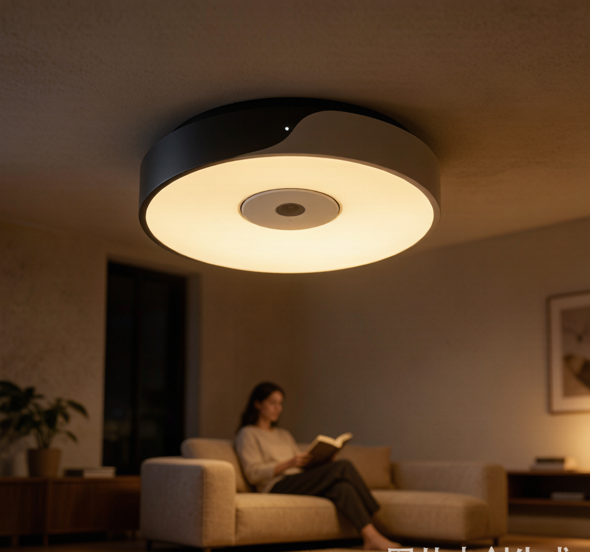
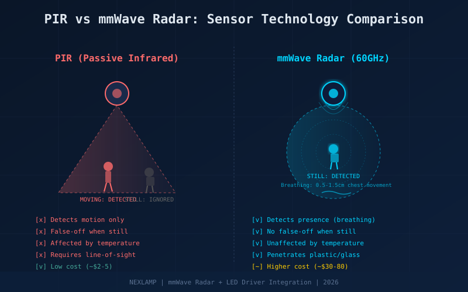
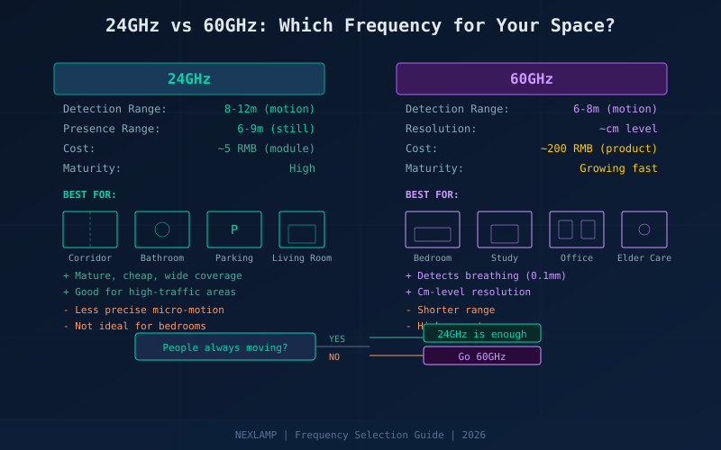
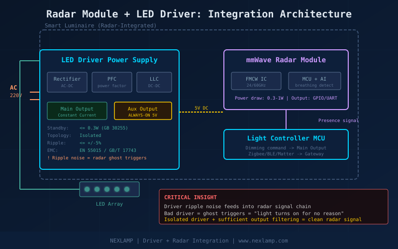

You've been there: sitting on the couch reading, perfectly still, and suddenly — click. The light goes out. You wave your arms, stomp your feet, just to get the light back on. Bathroom break? Light dies mid-scroll. Working at your desk? Gone.
Your light isn't broken. Your sensor is just too dumb to know you're still there.
PIR's Fatal Flaw: It Only Sees Motion
Over 90% of smart sensor lights on the market use PIR (Passive Infrared) sensors. The principle is simple: detect changes in infrared heat as your body moves through the sensor's field of view. When you walk, your body creates a temperature differential — the sensor triggers, the light turns on.
Here's the problem: PIR can only detect moving heat sources. Once you stop moving, there's no new spatial displacement for the sensor to see. It concludes "nobody's here" and shuts off the light.
This is the "false-off" problem — the most complained-about issue in smart lighting, bar none.
mmWave Radar: A Sensor That Can "See" You Breathe
In 2026, a technology once reserved for military radar and autonomous vehicles is rapidly entering home lighting — millimeter-wave (mmWave) radar.
The core principle is FMCW (Frequency Modulated Continuous Wave). The radar antenna continuously transmits a microwave signal whose frequency increases linearly over time. When the signal bounces off a human body and returns, the sensor analyzes the frequency difference and phase changes to determine not just "is someone there" but also detect extremely small movements.
How small? Human breathing causes chest displacement of about 0.5–1.5 cm. A 60GHz mmWave radar can resolve movements as small as 0.1 mm.
This means: you can sit completely still for an hour, and as long as you're breathing, the radar knows you're there. The light stays on.

24GHz vs 60GHz: Which Do You Need?
Two main frequencies dominate smart lighting:
24GHz: Mature technology, low cost. Motion detection range of 8–12 meters, presence detection (static) range of 6–9 meters. Great for living rooms, corridors, and meeting rooms. Modules like the HLK-LD2410D cost just a few RMB.
60GHz: Shorter wavelength (~5mm), more sensitive to micro-movements, centimeter-level resolution. Can detect breathing and even heart rate. Ideal for bedrooms, studies, and elderly care rooms where precise presence detection matters. Consumer products like the Aqara FP2 are now under 200 RMB.
Rule of thumb: For high-traffic areas where people are always moving, 24GHz is sufficient. For spaces where people stay still for long periods — desks, beds, offices — go with 60GHz.

The Hidden Link: Radar + LED Driver Power Supply
Here's what most articles won't tell you: mounting a radar module inside a light fixture creates a critical engineering challenge — where does the power come from?
The radar module needs continuous power to function (typically 0.3–1W). This means the LED driver can't simply shut down when the light is off. It needs an always-on auxiliary output that keeps the radar alive even when the LEDs are dark.
This puts three new demands on the driver:
Ultra-low standby power: GB 30255-2026 requires standby power ≤0.3W. The radar itself consumes 0.3–1W, so the driver's own standby losses must be extremely low, or the total exceeds the limit.
Output ripple control: Radar modules are sensitive to power quality. If the driver's output ripple is too high, the radar may interpret power noise as a human signal — causing "ghost triggers." Isolated topology with proper output filtering is essential.
EMC compatibility: While the driver's switching frequency (tens to hundreds of kHz) doesn't directly interfere with 24/60GHz radar bands, poor EMI filtering can cause harmonics that couple into the radar's signal chain, reducing detection accuracy.

Bottom line: A radar light's reliability is 50% radar algorithm, 50% driver power quality. Many users who complain about frequent false triggers are actually victims of a cheap driver with excessive ripple — not a bad radar.
2026 Market Reality: Going Mainstream
The good news: mmWave radar lighting is rapidly becoming affordable:
- Yeelight RadarSense: Ceiling light with built-in mmWave radar, 269 RMB crowdfunding price, 160W constant-current driver, integrates with Mi Home
- Aqara FP2: Standalone mmWave presence sensor with multi-zone detection, under 200 RMB
- Philips Hue: mmWave presence sensor integrating with Hue Bridge v2
- Shelly / ThirdReality: mmWave sensors in the $30–80 range
The U.S. Department of Energy estimates occupancy-based lighting controls save 24–38% of commercial lighting energy on average. AI presence sensing pushes those savings higher by eliminating false vacancy events.
Buying Guide: Three Checks, One Test
Check 1 — Frequency: Large spaces → 24GHz. Precise presence detection → 60GHz.
Check 2 — Sensitivity adjustment: A good radar light should let you independently adjust sensitivity to avoid false triggers from fans, curtains, and pets. If you can't adjust it, walk away.
Check 3 — Driver quality: Ask about standby power, isolation topology, and EMC certification. These three specs determine whether your radar light will "act up."
The Test: Buy it, sit under it, and read for 30 minutes without moving. If the light stays on — it passes. If it goes off — return it.
The Bottom Line
From "light on when someone walks in" to "light stays on while someone's breathing" — mmWave radar is redefining what smart lighting perception means. But remember: the radar is just the eyes. The driver power supply is the heart. A quality driver is what makes a radar light actually work.
At NEXLAMP, we design smart lighting LED drivers specifically engineered for mmWave radar integration — with standby power under 0.3W, isolated topology, and ripple specs that keep your radar signal clean.
NEXLAMP — Smart Lighting Driver Power Supply Specialist
www.nexlamp.com | Mr. Liu +86 13825496855